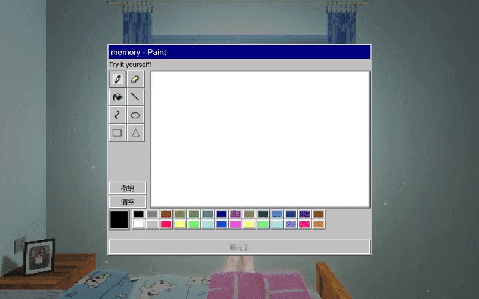

我们究竟在向往什么？
《故园旧梦》是一款以千禧年代中国旧居为场景的叙事探索游戏。玩家回到记忆中的房间，触摸旧物、打开电脑、倾听电视里的声音，并在三个夜晚进入不同的梦。
小时候，我们期待长大；长大后，我们开始怀念过去。梦中的人承载着不同年龄对未来的想象，而被怀念的年代，也渐渐混入了不属于它的事物。作品由此追问：我们向往的是某个时代，还是一个不必面对当下的自己？
探索旧物，与梦中人交谈，画下一条属于自己的鱼。随着三个夜晚展开，灯光、声音与熟悉的物件逐渐显露裂缝。最终，你沿楼梯离开旧居，再次望见曾经的梦境：鱼与记忆留在梦里，而人回到今时今日。

旧居 Room
第一夜的旧居
梦境 Dreams
第一夜的梦境
梦中人 Characters
第一夜：梦中人与对话
交互 Interaction
画下记忆中的鱼